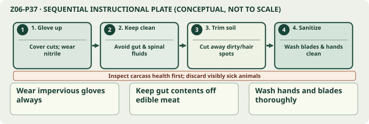

Z06-P37 · Hunting and fishing · New manuscript
Field-Dressing Hygiene and Contamination Prevention
Prevent bacterial spoilage and zoonotic exposure during lawful game field dressing through gloves, clean tools, and intact viscera handling.
When it applies · Post-harvest handling of legally taken big game and small game.
Equipment · Impervious disposable gloves, clean sharp knife, potable rinse/wash supplies, clean game bags.

Actions
- Wear impervious nitrile or rubber gloves and cover any skin cuts before handling any wild game carcass to block tularemia, brucellosis, and bacterial wound infection.[H09, H11]
- Prevent rupturing the digestive tract, bladder, or gall bladder; immediately trim away any meat visibly soiled by gut contents, hair, or dirt rather than smearing contamination by rinsing indiscriminately.[H17]
- Keep brain, spinal cord, spleen, and lymph-node tissues out of meat contact and sanitize knives, saws, and hands thoroughly afterward.[H09, H17]
Failure recognition · Field-dressing barehanded with nicked fingers or puncturing intestines contaminates edible muscle with E. coli, Salmonella, or zoonotic pathogens.[H09, H11, H17]
Verify · Gloves remain intact, viscera are removed cleanly without contaminating meat, and knives/hands are sanitized.[H09, H11, H17]
Stop or change course · Stop processing and discard visibly diseased carcasses showing widespread abscesses, foul odor, or abnormal organ lesions.[H09, H11, H17]
Evidence and editorial notes
- H09 · CDC · About Chronic Wasting Disease (CWD) Hunter Precautions (2024)
- Section: Reducing risk in places with CWD activity; testing · Conditions: Deer or elk taken in a CWD area, plus regional rules
Support: Avoid sick and found-dead animals, minimize nervous tissue contact, use suitable gloves, and follow testing guidance. Do not eat positive animals.
Limitations: A negative test does not establish safety against all hazards. Do not use cooking as a substitute for CWD guidance. · Conflicting evidence: Conditions are recorded in the A03 audit.
Editorial note: Reinforces Z06 prion hygiene boundary. · Specialist reviewer: Infectious-disease and wildlife veterinarian
Primary source · checked 2026-11-25 - H11 · CDC · About Tularemia and Wild Rabbit / Game Handling Precautions (2024)
- Section: Tularemia precautions with wild rabbits, hares, and rodents · Conditions: Field handling of small game and carcasses
Support: Wear impervious gloves when handling wild rabbits/rodents, avoid sick or sluggish animals, and cook meat thoroughly; bacteria can enter through skin breaks or aerosols.
Limitations: Do not handle found-dead wildlife; seek medical evaluation promptly for fever or skin ulcers after exposure. · Conflicting evidence: None noted.
Editorial note: Critical Z06 small-game zoonosis safety gate. · Specialist reviewer: Infectious-disease specialist
Primary source · checked 2026-11-25
Current assessment · A04-H11 (2026-11-25) · Bounded support newly confirmed (A04): Supports agency-level risk controls and routes. Remains a narrow public-health claim. No assessment or release for a specific animal or food item. Limits: Specialist review PENDING (Infectious-disease specialist); publication HOLD. All release decisions pending. - H17 · Minnesota DNR · White-Tailed Deer Hunting and Management in Minnesota (Current web edition)
- Section: Big-game seasonal ecology and field-hygiene cooling · Conditions: White-tailed deer habitat, rut/winter yarding, and meat spoilage limits
Support: Rapid cooling below 40 F, keeping carcasses clean of gut contents and dirt, and protecting meat from insects prevent bacterial spoilage.
Limitations: Warm autumn weather accelerates spoilage within hours; abandon harvest if safe transport and cooling cannot be achieved. · Conflicting evidence: None noted.
Editorial note: Connects Z06 harvest to cold-chain food safety. · Specialist reviewer: Wildlife manager and food-safety specialist
Primary source · checked 2026-11-25
Source lineage · New manuscript (Z06 P17 field hygiene) · Classification · New manuscript.